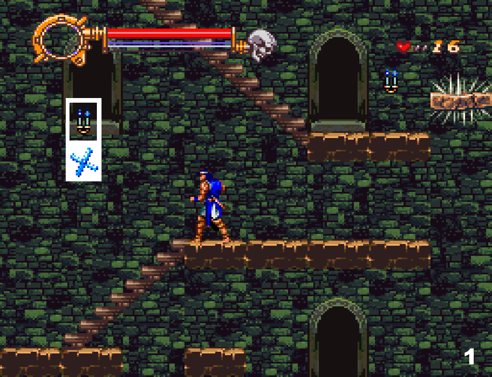

STAGE 3



STAGE 1
There’s an axe hidden in the candle on top of the platform.
There’s also an axe on the first candle to the right if you didn’t
pick it up, otherwise if you are holding an axe already, it will turn into a big heart instead. Every time you are holding a weapon and you open a candle that had that weapon, it will always turn into a big heart. Use the axe to kill the skeleton.
Jump to bait the bat, and when it wakes up, kill it with the ax. The bats are invulnerable while they hang.
Wait while whipping until the skeleton jumps towards you. You will also hit the bat.
Keep climbing and wait for the bat to wake up to hit it. Then the bat to the left will wake up but you can just ignore it.
There’s going to be medusa spawns. Hold the attack button while facing left to moonwalk, to leave the medusas behind.
Use the axe against skeletons.
Pick up the cross that’s hidden on the second candle. You could break the candle with the
axe so you don’t fall behind and get caught by the bull.
Wait at the edge until the zombies fall down.
To pick up the big heart at the end of the screen, you have to jump and hit it while falling down and you will pick it up when you jump to the platform.
There’s chicken inside the wall, the wall will break if you attack.
Once you get to the boss fight, keep walking until you reach the window in the background. Then right before the boss attacks you, use the item crash. Wait for the flame and jump over it, and when the boss is again about to hit you, use the item crash again. If you don’t kill it with two item crash, just keep using it until it’s dead.
If you die or you would prefer to fight this boss with the axe, there’s one at the beginning of the boss screen.
Hit the boss with a whip around the background window. When the boss gets knocked back, use the axe to reach it. Then walk to the tree and jump over the flame. Then attack it with a whip, walk under the window and throw the axe and repeat the process over and over until the boss dies.
STAGE 2
There’s going to be mermaid spawns. If you jump and encounter one at the edge of a platform, you can always duck to prevent getting knocked back so you don’t fall down.
Duck and whip, then there’s another mermaid that’s going to spawn when you get the big heart. Kill it and get the cross at that candle.
Whip right before falling on the bridge so you don’t duck. Then use the cross when you see the first mermaid. Keep walking
and once the cross comes back to you, use it again and repeat this until you arrive at the end of the bridge.
You can break the barrels that the enemy skeleton throws.
Pick up the big heart and walk until you see the eye. Kill all the zombies around you, back off a bit and kill the eye when it is in range.
You can destroy the axes that the knight throws. It can throw them vertically or horizontally.
Pick up the holy water and stand by the stairs and kill the knight with it. You should be able to dodge its axes by going downstairs.
You could skip this screen by doing a damage boost, but you need the axe that’s on the left of this screen so if you do the skip then you will miss the weapon. You can make the knight stop moving by whipping so you get the knight to stand in a favorable location, away from the knight above you. The second time you whip, the knight will lift its arm and attack you. Once the knight lifts its arm, you need to jump to the spear.If this fails, you have to re-enter the screen, because the knight only swings the spear at you once.
Kill the knights with the holy water, keeping a safe distance in case they swing their spear.
Keep moving to the left of the screen and killing the knights with the holy water. There’s a big heart in the candle.
Break the candle and pick up the axe. The knights repel sub weapons, but if the knight gets cornered, you can get very close and you could hit it under.
Wait for the dog and don’t get too close to the next skeleton.
Once you see the eye, back off until the eye swings higher enough to whip it twice.
Do the same with the other eye
There’s chicken inside the wall and a few hearts. Ignore the knife.
To pick up the chicken you just have to break the wall with an attack. You could just jump over the eyes and ignore the eyes.
To open the candles, you need to backflip and whip to reach.
Stand to the right side of the first background white pillar and throw an axe. Then the tiny bats will come down. Just whip without moving, and the bats should come back at the same spot so you won’t get hit. Repeat this and if the bats move, walk slightly to the side. The boss can’t die in big bat form, so you have to lower its HP before it transforms to big bat or you will get one more cycle. You could use the item crash to guarantee it has no HP before it turns into a big bat.
You can use the item crash if you are about to get hit, to avoid the damage with the i-frames.
If you die to the boss, you can go downstairs and go back to pick up the axe.
When you get to the stairs, you can break the candle and then climb down until the dog starts moving. Then you can jump over the dog, pick up the axe and immediately jump on the stairs again.
STAGE 3
This screen is very long. We can take a short path (blue) or long path (red) to pick up the hearts and an axe.
If you take the short path, you can climb up all the way to the left and when you reach the last platform where the two candles are, you can make a backflip up so you don't have to go around.
Take the long path if you want to pick up the axe and hearts. You want to climb the two steps to the right and kill the dino skull before continuing. Be careful with medusa spawns. Duck to prevent knockback if you get hit by the medusas.
After the dino skulls, pick up the axe that’s inside the candle. If you are already holding an ax, this candle will be replace with a big heart instead.Then climb the stairs to the left.
When you arrive at the top of the stairs, open the candle and pick up the heart. Then climb the steps to the left.
When you are in the last step, you can throw a few axes to kill the dino skull from below. Then keep climbing to the right and pick up the heart in the candle. Then climb the stairs.
Once you reach the end of the stairs, keep climbing the steps to the right and pick up the heart hidden in the candle on the way up. Be careful to not get hit by the spiky platform, or hit a medusa head.
Then move to the left until you jump on that step before the spiky platform.
Throw a few axes to kill the dino skull from below.
Wait until the spiky platform leaves and jump to the next platform and climb the stairs.
Once you are on the stairs, get close to the dino skull and kill it. Be careful with medusa heads, time it correctly to be able to kill them when they are behind you.
This part is kind of tricky because you can fall down the stairs to the bottom level while trying to jump over medusa heads or by getting pushed down by them. You can get close to the upper platform and do a backflip to get back to the platform you were at, and skip the long path that leads there.
Then carefully make it on the upper platform.
Moonwalk while making it to the right and you will find the exit. Remember there’s rotating platforms so be careful to not fall down, and the spiky platform
You can jump away when it swings the spear at you, and you can use the stairs to climb up to avoid getting hit.
There’s chicken at the end. You can go back and forth in the stairs to pick up more chicken.
Wait for the platform to come back and open the candle and pick up the item. This gives you invulnerability for a short amount of time. Get on the platform and face left so the bats spawns to that side.
Once on the platform, just duck while facing left, and stand up after making it past the spikes so you can get to the next platform.
Once you reach the middle yellow platform, jump on it and immediately jump to the next moving platform while moonwalking.
Stand up and keep pressing the attack button so you can moonwalk. Go to the right of the platform until you see a mermaid spawn. Then move to the other side to not get hit by it. Repeat it with the next mermaid
If you are fast enough, you can stand on the dino skull and jump to the upper platform so you skip part of the screen.
but if you go around, you can find a 1UP hidden in the wall.
Then you can just whip at the edge of the platform until the knight is dead.
ROUTES
Here at this point of the game is where the routes split and you can choose between the bad ending route (no rescuing anyone and falling down the pillars to the catacombs) and the good/best ending route. If you desire to go for the good/best ending, keep reading this page. You must make it to the end of the pillars section, pick the key and fight the knight. If you wish to finish the game with the bad ending, fall down the pillars and keep reading in STAGE 4'.
Bad ending
If you want to go for the bad ending route, pick up the hearts
and fall down from the pillar. Go right now to STAGE 4’ in the guide to continue reading for the bad ending.
Good/best ending
However, if you want to get the good/best ending, don’t fall from the pillars and keep going until the end of the screen. If you fall by accident, you can put the password and beat the entire stage once again.
Pick up the hearts. You can reposition to the middle of the platform if you keep pressing the attack button and moonwalk
Wait carefully until you kill a medusa head to continue jumping to the next platform. You can duck just in case you get hit so you don’t fall from the platform. Once you see the candle, duck to attack the skeleton just so you don’t open the candle yet.
There’s an axe inside the candle, pick it up if you don’t have the axe.
Kill the dino skulls with the axe and duck if you see a medusa
Right behind the dino skulls there’s meat inside the candle
Wait until you see a medusa, duck to prevent getting pushed down and jump to the next pillar. When you see the skeleton, you can stand in the upper pillar and you can throw an axe when it’s safe to kill it.
Stop on the platform when you see the dino skulls.
Stand on the very edge of the platform and throw axes. You will be able to kill all the dino skulls and if you get hit, you will land on the platform to the right.
Once you get to the end and cross the screen, you will find a room full of candles. There is the key that will open both the door to Maria's chamber and the door to the stage where Annete is held captive. Break the candle and pick up the key.
Once the battle starts, pick up the big heart and rush to the left side of the screen.
There’s chicken inside the candle to the left.
When the knight spawns, duck in front of its spear and whip. Then he can do a few things
STAGE 4' (BAD ENDING)
which are random. If it jumps over you, duck until it lands on the other side and then jump away.If it does any other move, you can dodge if you do the item crash right before you are about to get hit. This item crash doesn’t do
anything, but it gives you invulnerability which we can use to dodge the boss attacks.It’s always safe to duck in front of its spear to attack.
Right now go to STAGE 4 in the guide to continue the route.
You can pick up the heart if you stand very far on the edge.
When you see the skeleton, back off, it will jump and die.
Wait until the skeleton jumps towards you to kill it.
You can backflip to the top of the platform above.
Pick up the axe from that candle if you didnt have it yet
You can kill the skeleton from below and jump over the knight.
Jump to the platform and kill the bat. Moonwalk towards the end of the platform and fall.
Wait down there until all the bats are gone. Then jump up on the platform. Careful, if you touch the platform it will start rotating, so make sure that's not rotatingbefore walking on it.
Moonwalk until the end of the platform and jump at the end.
There’s chicken hidden in that candle, you can pick it up:
You could break the candle with the ax or with a normal whip.
If you fall down, you need to sink quite a bit to be able to kill the mudman and the bats.Then make it to the closest platform with a backflip.
Keep distance with the red skeleton, it will first throw the bone, and then attack. After that, it will jump over you. You can just walk under and jump away from it. You can make it under the dino snake too.
Kill the first bat and sink down the mud quite a lot, so you avoid hitting that candle (weapon) while trying to kill mudmans.
Then keep sinking so you don’t wake up the bat, and kill the mudmans and the last bat.
There’s chicken inside the wall.
This is the room before the boss If you die, you can pick up the cross to fight the boss. It’s located inside a candle that’s hidden behind the top scenario.
If you fight the boss with the axe, walk to the 3rd rock to make it spawn and go back to the bright side of the pillar.
Once you see the purple colors of its vest, throw an axe.
Walk left and right and throw an axe until its hp bar is zero.
Then the boss will transform. Stand by the rock and throw axes without stopping.
STAGE 4
If the boss fight goes out of control, beware of your surroundings. Prioritize the skeletons and the pink shot more than the boss. The pink shot takes a while to turn towards you, so bait it to a side and move to the opposite and kill the skeleton there.
Spawn it the same way, and stand in the same place. Once you can see the boss, throw the Cross. It will hit and it will follow the boss to the other side
Be careful with the pink shot. Prioritise killing the skeletons.
When it transforms, Throw the cross once and whip it three times. Then do an item crash
Moonwalk right away when you enter this screen. Don’t bother opening candles. Turn around to kill the skeleton and keep moonwalking until the end.
When you reach the wall end, wait at the corner facing left. When the bats are about to hit you, use the item crash. The skeleton will land on the key and die.
Climb and kill the skulls
Bats will spawn in front of you. Wait for the skeleton to be close to the edge.
You can’t reach the skeleton if you are not on top of the platform. Try to go closer as fast as you can.
You can open the candle with a backflip.
Moonwalk up the spiky platform and jump down. Wait until the knight charges at you to backflip over it. Then jump to get away from it, and walk under the platform. You could also duck in front of the knight and wait for it to make it past you, taking damage.
Moonwalk and jump on the platforms and drop down.
In this entire section, you can use the item crash to avoid getting hit by the spikes. You will land on top of the platform then. You can open the candle with chicken and use the item crash.
There is the chicken location.
Keep moonwalking and make it on the platform to the exit.
Get on the platform and once the skull spawns, whip it. Keep on the platform without moving and land another whip when the skull is in whip range.
Behind that door is where Maria is hidden. You must have the key with you. You need to stand in front of the door and press up and attack (like a normal sub weapon). Ritcher will punch the door with the key and it will open. You will see a cutscene with Maria and you will recover all your health inside. You still have the key after leaving her room, which we could use to open the path to where Annette is hidden.
wait until the skull appears. Whip and jump to the right. Then use the key in front of the door. You will enter and see a cutscene. Your HP will be restored.
Get on the left platform when it goes up and use the item crash to avoid the skull. Whip the next one. Duck if you think you are going to get hit.
Jump to the right to get on the new set of platforms, and once you land on the platform, face left and use the item crash. The key will appear in your left hand, and hit the candle, which is the item that clears the screen, and it will kill all the skull enemies around.
If you fail, just keep using the item crash until you make it to the top to become invulnerable.
Wake up the skeleton and bring it to the edge. Then carefully scroll the screen little by little to wake up the fleaman one by one. Don't move so much, let them come to you, while you keep the skeleton behind you.
Jump on the middle of the platform and whip until the fleaman comes to you. Once you kill it, move to the edge of the platform to wake up the next one and do the same.
Keep scrolling the screen little by little, and just wait for the fleaman to run into your whip.
This screen is where you can choose between the good ending only saving Maria and fighting the minotaur, or open the door to the stage where Annete is held captive.
Best ending
Open the door on the top right of the screen with the key, and go right now to STAGE 5’ in the guide to keep reading the walkthrough for the best ending.
Good ending
If you want the good ending, pick up the axe in the room before the boss, and enter the boss room to the left.
Once the fight starts, drop down the platform and whip so you don't duck. Get close to the boss to the point that you can hit it with a whip. If you are lucky, the boss will start walking backwards, we want to corner it. If it doesn't move back, just keep the distance and keep hitting with a whip.
When the minotaur reaches the end, jump in front of that platform above us, and keep throwing axes. If the minotaur throws the ground, you can destroy them with an axe.
If the minotaur charges at you
and escapes, you can use the item crash to avoid getting hit. If you use the item crash you will break the rock where the chicken is hidden. If you rush to the right, you might be able to catch it.
There's meat hidden in the rock. To pick it up, you have to break it with an axe.
Right Now you should go to STAGE 5 in the walkthrough and keep reading there. You can't rescue Annette anymore, and you will have to fight against her skull on stage 6 instead of Death boss.
STAGE 5' (BEST ENDING)

There’s going to be mermaid spawns in this section. Jump on the platform and use the moonwalk to move back and forth to make them go away.. Duck on the platform until you see the other mermaid, to prevent falling from the platform in case you get hit, and hit it with a whip when it gets closer.
For the next platforms, do the same, but if the blue skulls are getting very close, you can duck to take the hit so you don’t fall.
Again if you want to make a mermaid go away, stand above them and move back and forth with the moonwalk. They will guaranteed jump away.
Keep on the top platform. We will pick the axe that’s inside the first candle you find.
Drop down the platform and kill all the blue skulls first. Then turn to the right and shoot axes to the snake skull. You can destroy the fire with the axe.
Moonwalk back and forth to make the mermaids jump away.
Drop down the next platform and don’t move. Another mermaid will jump in front of you, so kill it and get the big heart. Then wait at the edge of the platform while ducking.
Once you see the moving platform coming, drop down and stand close to the middle right edge. When you are very close to the candle, break it and get the invulnerability item. You won’t be able to get hit by the spikes, and you will ignore all the enemies that come.
Get on the moving platform and break the candle. There’s the item that clears the screen.
Wait until the platform moves close to you and drop down. Then jump to the next platform once it’s very far down. If you duck you won’t hit the spikes. When the platform is almost at the bottom and you see the left platform going down. jump on it.
You can pick up the boomerang that’s hidden on the top candle.
There is also a boomerang in this screen. In this screen the water will scroll up. You have to be very fast. Jumping is faster than walking, so jump until you see the two steps. You can turn around and kill the blue skull that’s coming from the water and pick up the big heart.
Jump on the steps and stand on the top one, very close to the edge to make it on the platform. Break the first candle to the left to pick up the boomerang if you didn’t have it yet. You can use it to open the rest of the candles while walking. You can’t jump this time due to the spikes.
Again jump on the top step and jump from the very edge. Open the first candle, it has the invulnerability item. Jump until the end and you can kill the snake skull by touching it.
Destroy the red skull first, and walk under the snake. You can do a backflip to make it on the platform, ignoring the snake.
Annete is hidden in this screen under the water. To save her, you have to hit the water drain.
Hit the water drain until it breaks. The water will go away. Drop down from the edge of the platform and you will find the room where Annette is hidden. You will see a cutscene then. You will get full HP back once you leave the room.
There is going to be mermaids appearing in each candle in this section. There will also be mermaids in every hole with water. Pick up the axe, get close to the edge, kill the mermaid and kill the bird with the axe.
There's chicken hidden in the wall where the bird was.
Keep in mind that there's going to be mermaids in each hole and enemies in each candle. Pick up the stopwatch and get to the boss room.
Once the fight starts, move slightly to the right and whip the snake once (sometimes it doesn’t work) Then drop down from the platform.

Walk until you reach the red column from the background and use the item crash immediately.
Stand still until the boss appears. As soon as you see the boss, walk in the same direction. If it appears to the right, walk to the left, etc.
If the boss survived, walk back to the column spot and don’t move. Wait until the boss shows up and whip it.
If you die, you can recover the stopwatch and enough hearts for the item crash in the screen before the boss.
STAGE 5
You will get to this level if you come from the catacombs (stage 4’ bad ending), or if you saved Maria and fought the minotaur at the end of stage 4 instead of opening the door.
If the bird wakes up before you can hit it with the ax, you can despawn it if you walk towards the left until the very end of the screen, if you wait there, the bird will drop down and despawn to the left.
You can kill the second bird with an ax before it wakes up.
If you have a lot of hearts, you could use the axe to kill the knight from below. But we need
the hearts for the next section.
You could just jump over the knight if you don’t have hearts.
This screen will be crowded of fleaman. Right at the start, it
will always be a fleaman that you can kill with the axe. Walk afterwards and try to kill the next one with the axe. Then move the screen slowly until you see a fleaman on the ground so you can throw an ax without waking it up.
Then keep walking, don’t jump, and never stop walking. Ignore the fleaman that are in the back and focus on killing the ones in front of you. As soon as you see a fleaman with the bat in the screen, throw axes until you kill them. If a fleaman hits you and it ends up behind you, ignore it and keep walking.
There’s a big heart hidden in that candle. You could pick it up with the axe.
Towards the end, start throwing a lot of axes once you see the first bat appearing to the right of the screen until all the fleaman are dead so you can keep going. At this point all the fleaman that were behind you will be completely gone. There’s one last fleaman at the stairs.
If everything goes wrong and you are completely surrounded and overwhelmed, you can use the item crash to clear the entire screen.
If you die in this screen, you can pick up the knife that’s hidden in the first candle.
As soon as you see a fleaman carried by the bat on the right side of the screen, jump and shoot the knifes. These are fast enough to kill all of them before they can fall down.
If you are holding the axe, you can throw it as soon as you enter this stage, but if you don’t, you can move to the left once the bird wakes up, and go upstairs. The bird will move towards you and you can kill it.
Pick up the holy water and jump in place to not break the platform you are standing on, until the moving platform comes towards you.
After picking up the holy water, get on the platform and stand on the left side while ducking in case a bird comes. Make it to the next platform and the bird should move in a straight line towards you. You can kill it if you stand on the right side of the platform (or you can duck until it leaves the screen)
You can pick up the heart of the bottom platform if you stand far on the right and hit the candle. Duck on the moving platform until the bird leaves. You can do a clip in this next section, I will explain it with more detail later:
Right at the start, move to the right to move the bottom knight out of the way to be able to kill the upper one not getting hit
Walk towards the wall to spawn the skull and go back to kill it when it comes to you.
Then try to get the knights together to be able to move them out of the way.
Wait on the right side until they move away from the stairs.
Now there’s a clip you can make to the upper level if you
boost on the knights, I will explain it with more detail:
If you face the wall and keep walking left, the knights will show up at some point. Once you see the knight’s body is in between those yellow rectangles in the back, whip once to make them stand in place while they spin the lance.
Then after whipping, move immediately in between those yellow rectangles in the background, and make a neutral jump once you see the knight move the spear up.
But this is optional, you can keep playing the screen normally and go downstairs:
Go downstairs and hit the candle to get the big heart.
Then you can throw the holy water on the ground and walk far away from the knights. Repeat this until the knight is dead.
There’s meat inside that candle.
You can go upstairs and go back to the screen to spawn the meat over and over until you recover full hp.
Bait the upper knight to use the spear down while you throw the holy water to the knight, and move to the right to move away from the upper spear.
Then wait and move until the knights move to a location where you can go upstairs safely. Once you reach up, throw the holy water and stand very far away from them in case they swing the spear.
There’s going to be a skull appearing once you reach the edge of the platform. Move back to kill it, and jump at the very edge of the platform while throwing the holy water until you kill the last knight.
If you don’t have holy water, you can walk back and forth until the knight moves to the edge of the platform and you can kill it from there. Usually it won’t reach you with the spear but be careful.
Open the candle and move back to make the bird go that way. Kill it and open the other two candles.
Keep walking and stop at the very edge, pretty far out (you will kill the bird behind like that) whip until the knight is dead, it might take some time.
Do the same with the next knight and stand on the edge of the platform while whipping. It might take a while but just be patient.
In this section, you have to pick up all the big hearts and the stopwatch, which is in the first small platform you find. I will show you how to do this part:
Jump on the platform and open the candle that contains the stopwatch. Then jump to the next platform and open the candle to pick up the big heart. Every two candles there’s a hidden heart.
Now the boss. If you die fighting the boss, you can pick up the stopwatch and you will have enough hearts for the fight.
Align Ritcher with the edge of the tower in the background and wait there.
After the wolf screams, use the item crash when it jumps out of the platform.
If you are lucky, you might kill it without doing anything.
If it escapes, jump and walk towards it.
When the item crash runs out, use it when you are close to the wolf or you are about to get hit.
STAGE 6
Kill the skeleton and jump to the last platform, then duck so you don’t fall in case you get hit.
Kill the bird from behind and
make it in between the skeleton. You can pick up the big heart while making sure the red skeletons are dead.
In this section we are going to despawn as many birds as possible. It is possible to manipulate the rng if you mimic my moves in this section.
Once you climb the stairs and get to this screen, jump to the left right away and the first bird will despawn to the left.
Climb until you are in range to kill the skulls. Then walk and get on the next stairs.
Keep walking up and kill the bird once it wakes up. Then kill skull
Once the skulls are dead, you need to make it to the left side and wait at the very edge. You can jump to see where the birds are, to also bait them towards your position. At some point the birds will fly down and leave the screen to the left and never come back.
But if that doesn’t really work for you, you can use the item crash. Try to not use the item crash since we need a lot of hearts to fight the boss.
Use the item crash once you get very close to the first skulls. Then jump on the next stairs and keep jumping to go faster (remember to press up while jumping on the stairs, otherwise you will fall down) Climb without worries, everything around you will get killed and you won’t get hit. Then kill the next skulls and pick up the big heart if you can. Then go to the left to despawn the last birds.
Stand on the middle platform, whipping and dodging the axes by going back and forth. You can destroy the axes whipping.
You could do a backflip if you stand on the left side of the platform and the knight is on the right side to make it up and jump over it.
Jump to the rock and neutral jump to make it on the upper rock and go to the next screen.
Kill the knight from there and duck if it swings the spear.
Jump on the platform and try to move the knight to the side.
Once the knight is far away, you could use the stopwatch to
make the knight move slower to help yourself making it on the moving platform.
If everything turns complicated, get on the stairs and wait there very close to the knight but out of his range. Once you see the platform going down, move to the knight, get hit and jump to the platform right away.
Jump on the cog and jump on the stairs instead of the platform where the knight is.
Wait on the stairs, around the middle. A bat will come to you from the left. Kill it and once you see the platform going down, jump on it. You can pick up the big heart if you break the candle while standing at the edge.
Sometimes if you jump you can make it up on the cog, so don't freak out if this happens.
Open the candle while going down and move closer to the moving platform and jump on it while whipping. You will hit the skull, then duck and hit it again when the skull is in front of you.
Jump to the next big cog when the moving platform is very far down. Like this you won’t get hit by the next skull that appears. Immediately after landing on the cog, duck and ignore the skull, focus on walking to the next small cog and jump to the platforms.
Once you see the knight, duck so you don’t fall out of the platform. You can wait until the knight runs towards you and get hit and then jump away from the knight to the next screen.
You can also backflip over the knight if you want to avoid the damage.
Ignore the first candle and jump on the stairs to climb faster. Then jump to the platform and get the axe inside the candle.
Then jump on the big cog to the right to make it on the small cog to the left. You can open the candle by throwing the axe to pick up the chicken right away.
Wait for the platform. Jump on it, quickly jump on the cog and to the next platform.
If for any reason you didn’t make it on the moving platform first try, you can jump to the left while being on the cog until the moving platform goes down again, to keep your position.
At the end, jump on the last big cog, and keep doing neutral jumps. You will get pushed to the right, and once you are in the middle, white being in the air, whip to break the candle. The item inside is a screen clear that will kill all the medusa.You can duck on the moving platform once you reach it just in case you fall down (same if you see a medusa coming before crossing the screen).
You could skip this part if you stand on the left side of the platform (with one foot out) and do a backflip as soon as the platform is completely to the top. Then immediately after the backflip jump on the moving platform and get up.
Here is where you will fight a different boss depending on which ending route you chose. We are going to use a different weapon for each boss.
If you come from STAGE 5’ (best ending) you will fight DEATH, and we will use the knife against it.
If you come from STAGE 4 or 4’, Annete will turn into a SKULL that you need to defeat. We will use the axe against it.
There’s a lot of big hearts on the screen before the boss. There’s a 1up inside the wall too. If you die to the boss, you can recover the knife and enough hearts for the fight.
DEATH - Best ending
Pick the knife on the screen before the boss and all hearts.
The fight starts when you move to the left. Open the candle first and pick up the big heart. Then jump to the other candle on the other side to the left.
You want to make Ritcher stand in the middle of the bright border in the background and wait for the boss to come:
I use the X as a reference. When death comes down and
its bottom part of the cape touches X, do a neutral jump and shoot the daggers. Then jump towards it while shooting until you reach the right edge of the clocktower.
You want to wait at the edge and jump away when death comes. Then jump and shoot to keep death out of the screen and wait until it comes back again to repeat this. If there’s scythes coming towards you, you could whip them to destroy them, but if you are not sure you will hit, you can duck and take the damage to not get pushed out of the clocktower.
If death escapes the hit chain and moves to the other side, you can do the same but to the other side until death is out of the screen and do the same as we did before but on that side.
When the boss is less than half HP, it will transform to the second form. Align Ritcher’s head with the left border of the number III in the background.
Duck and wait until death lands. If you hit death while it’s still falling down, it can happen that it will get pushed towards you. Whip it quickly 5 times.
After whipping it 5 times, it will jump away and make a flying spin move. Once he jumps away, get slightly closer and when death’s body touches the heart count, jump away from it to dodge the spin attack.
Then you can whip one time. It will get pushed away. Just stand still and wait for death to do a move. If death attacks you will be far enough to not get hit. After its attack, move towards eath and whip again and stand still, repeating the process.
If death flies away, move slightly towards it and jump away once
Death's body reaches the heart count to dodge the spin attack.
It’s not a guarantee that it will work and you will be able to dodge the spin attack, so if you are about to get hit, you could use the item crash to avoid getting hit and you could keep spamming the item crash until the boss dies if you have hearts enough. It costs 10 hearts.
SKULL - Bad/good ending
Preferably we will play against this boss with the axe.
Move to the V in the background and stand still until the screen becomes white. When the screen goes back to normal, throw an axe, jump and throw another one.
The boss will be pushed away with the second axe, and it will
jump over you to the right. Just follow it and throw axes towards it, and when it jumps over you to the other side, jump after it. You can whip the fire balls to push them away from you, or just duck and eat the damage to prevent them from pushing you.
If you die, you can pick up the knife and open all the candles.
Again align Ritcher with the V in the background, and when the screen becomes white and normal again, jump and shoot daggers to the skull. Follow it and keep throwing daggers.
STAGE 7
Get close to the skulls at a distance that you won’t get hit by the fire and whip them.
Jump on the stairs and whip the next two skulls while standing up to kill them both at once.
You can make it under the snake if you jump until you reach the stairs.
Wait until the skeleton moves the neck. Then drop down and whip so you don’t duck and kill
Get on the platform, pick up the heart and jump on the next platform on the right side of it.
Open the candle. It will kill all enemies around you. Get on the platform on the left that goes up and duck.
Get on the left side and kill medusas. When you see a chance, get on the right platform and duck.
Stand on the left side of the platform and duck while going up. You might get hit by the knight spear but you won’t fall out of the platform. Then jump to the next platform and exit the room.
There’s chicken on the last platform level behind the knight.
If you want to pick it up, stand in the middle of the left platform and whip the knight until it dies. Be careful when you pick up the chicken so you don’t get hit by the knight below you,
Walk to the platform right when you cross the screen and stand a bit to the left of it. When your head is under the candle, jump and whip it to pick up the item that makes you invulnerable and cross the screen.
If you fall from the platform you need to go back. I would go down and pick the screen clear again to kill the knight in front of it, and repeat the process of going up as we did before.
In the screen before dracula, you can find all weapons. Pick up the axe. The rest of the candles are big hearts. If you die to Dracula, you have enough hearts to finish the fight.
Once the fight starts, jump to the middle platform (where dracula is behind)
We want to fight dracula only in this platform. If you hear Dracula appearing, but you can’t see him, duck to prevent falling from the platform in case you get hit. You can destroy the flames, but he shoots balls too.
If Dracula spawns in the platform next to you, you can hit it up to 3 times if you start shooting axes when Dracula is completely spawned. I recommend only shooting two axes since we need a lot of hearts for the second phase.
There's chicken hidden on the left candle.
If it spawns two platforms away from you, you can start throwing axes once the clouds reach the bottom on the platform. If Dracula spawns to the left, you will break the candle, so rush as soon as Dracula goes away, pick up the chicken and come back to the middle platform.
If Dracula spawns on the middle platform, quickly jump to either the left or the right platform. You can whip Dracula once, once the clouds reach the bottom. When Dracula opens his cape, it’s the time you need to do a neutral jump to dodge the fireballs. Then you can come back to the middle.
Once Dracula’s HP bar is empty, it will transform into a demon. When his life bar is empty, jump one platform away from where you were standing, to the opposite side where Dracula is. Stand on the edge that’s close to Dracula. The screen will turn white. After the flashing you can start
spamming axes as fast as you can. We stand on the edge because he shoots fireballs. You can kill the fireballs if you are lucky, but usually you will get hit, but you won’t fall out of the platform in that position. If you get hit, move to the edge once again.
When Dracula lands, jump immediately to one platform far away from him. You can keep shooting axes but duck right away, because he will shoot a laser that you can’t dodge. Then keep on the edge of the platform because he will come to you after the laser, and just repeat what we did before.
If you have little hearts, you will whip many times between axes. On the other hand, if you have a lot of hearts, you can spam axes one after another.
If you die to Dracula, you can recover the axe and enough hearts to defeat him.